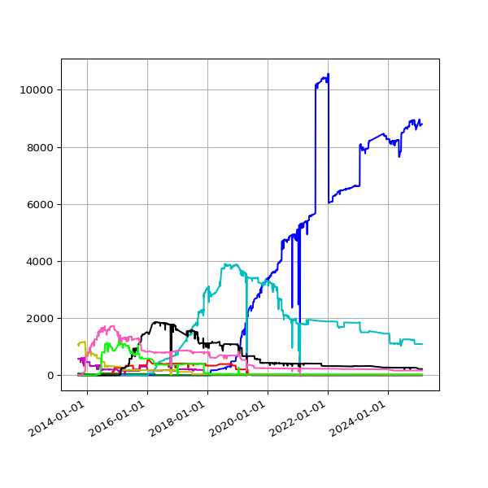
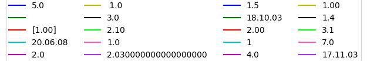
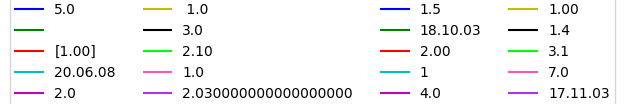
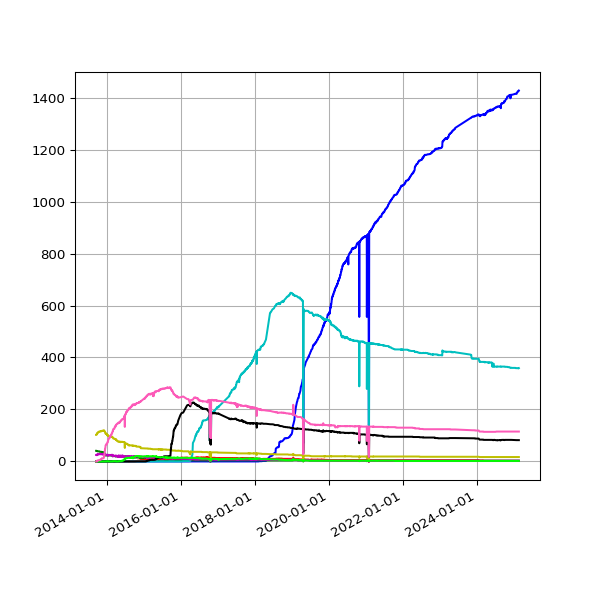
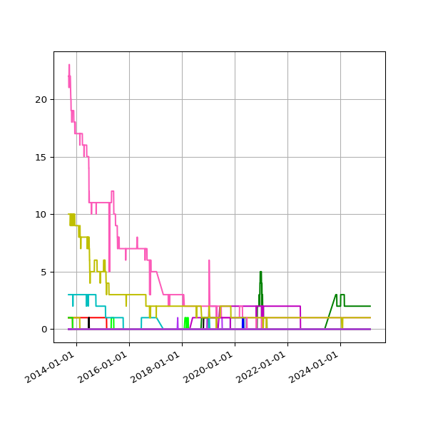

Versions
Which versions of the IATI Standard are being used?
Files are reported against a specific version of the IATI Standard, using the version attribute in the iati-activities element.
Files per version (expected)
(J)Count of files per IATI version, over time. Expected: these are actual versions of the IATI Standard.
Files per version (other)
(J)Count of files per other versions, over time. These values do not actually exist as IATI versions.
 

Publishers per version (expected)
(J)Count of publishers per IATI version, over time. Note: If a publisher utilises two or more versions, they are counted for each.
Publishers per version (other)
(J)Count of publishers per other version, over time
Publishers by version
Expected versions
Listing of publishers per IATI version. Click on any publisher name for more information.
1.01
| World Wide Fund for Nature - Pakistan |
| Centre for Indian Knowledge Systems |
| The Foundation Center |
1.02
1.03
2.01
2.02
2.03
Other versions
Listing of publishers publishing a non-recognised version number. Click on any publisher name for more information.